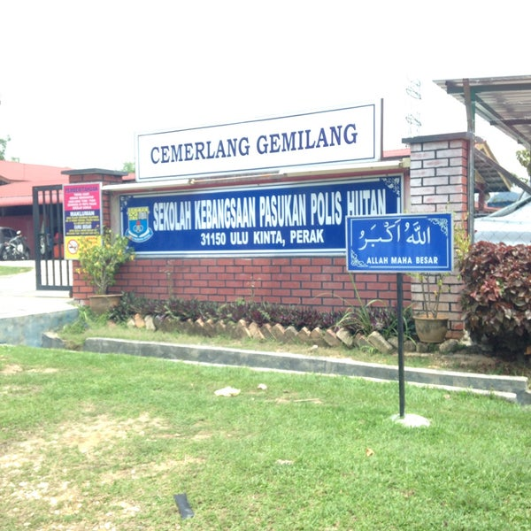
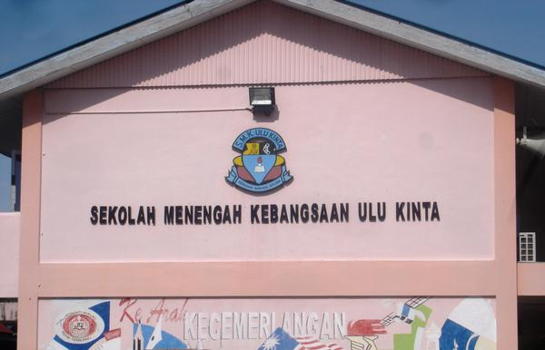

MY PERSONAL WEBSITE

📚 I started my primary school studies at Sekolah Kebangsaan Pasukan Polis Hutan (SKPPH) . I attended this school from 7 years old to 12 years old. I spent my elementary school time at this school. This school is located about 2km from my house. Most of the students at this school are children of policemen, as the school is very close to the police camp.

<
📚 Sekolah Menengah Kebangsaan Ulu Kinta is a school where a lot of my memories are holds. I started moving to this school when I was 14 years old in 2015. I took a religious stream class at this school, where this religious stream is only open to one class for each level. After sitting several tests, I was successfully transferred to this religious stream class. During upper secondary, I took the accounting principles stream as well as some religious subjects for additional subjects. Such as, Al-Quran As Sunnah, Arabic Language and Sharia. In 2018, I graduated from form 5 at this school. I learned a lot of things and also had a various of memories throughout my schooling at this school.

📚 After finishing school, of course, all students seek and apply to pursue higher education. I was offered a Diploma in Information Management course at UITM Kedah branch. After discussing with my family, I agreed to continue my studies at UITM Kedah. While continuing my studies at this university, there were no peers from previous schools who also received offers at UITM Kedah branch. But I remain eager to further my studies here, creating new experiences. Now, I am in my final year of study and hope to complete this study successfully.